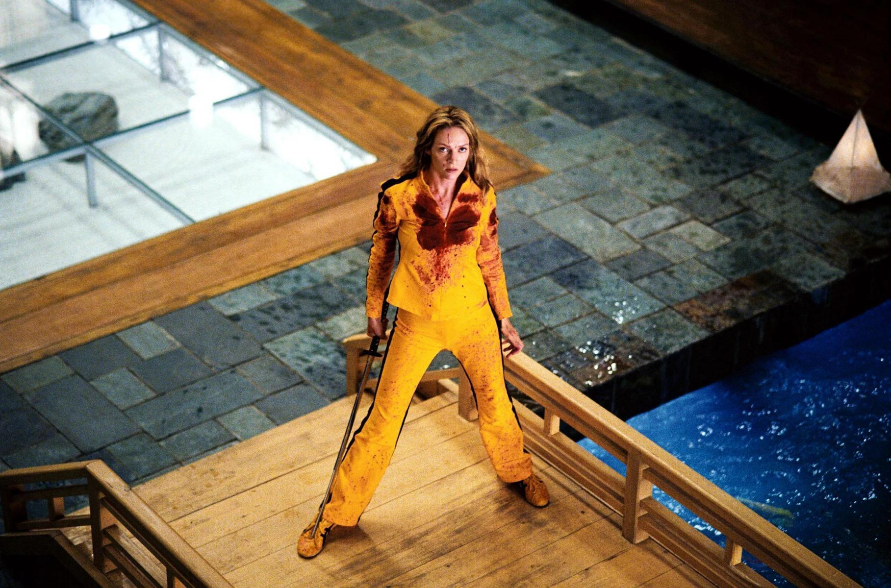
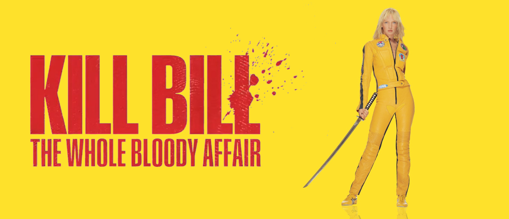

Kill Bill: The Whole Bloody Affair regresó este fin de semana de abril de 2026 a cines seleccionados con una versión unificada de las dos películas originales, dirigida por Quentin Tarantino y protagonizada por Uma Thurman. El reestreno es relevante porque presenta la historia como fue concebida originalmente: una sola película de más de cuatro horas, con escenas restauradas, nuevas transiciones y formato premium en 70 mm, pensado para una experiencia cinematográfica más inmersiva.
La versión que los fans esperaron por años
Más que un simple reestreno, esta edición reúne Kill Bill Vol. 1 y Vol. 2 en una sola proyección continua, respetando la visión narrativa original de Tarantino. La experiencia incluye un intermedio y algunos ajustes visuales que hacen más fluido el viaje de venganza de La Novia, sin alterar el corazón de la historia.
El regreso en 70 mm se ha convertido en uno de los mayores atractivos para cinéfilos y nuevos espectadores. Este formato ofrece colores más profundos, mejor textura visual y una sensación más “física” de la imagen, ideal para una película tan estilizada y coreográfica como Kill Bill, la duración ronda las 4 horas y 30 minutos, convirtiendo la función en toda una experiencia de evento, perfecta para fans del cine de culto y maratones en pantalla grande.

El elenco que hizo historia
Uma Thurman vuelve al centro de la conversación como La Novia / Beatrix Kiddo, uno de los personajes más icónicos del cine de acción. También destacan Lucy Liu, David Carradine, Daryl Hannah y Sonny Chiba, nombres clave en una película que mezcló artes marciales, western, anime y thriller de venganza.
Su legado sigue vivo en la cultura pop: moda, referencias musicales, cosplay y homenajes visuales continúan inspirándose en su estética amarilla y negra.
"Puede que sea su obra más gozosa, en la que dejara disfrutar más a su niño interior."
— Gregorio Belinchón, crítico de cine de EL PAÍS

Reacciones: nostalgia y celebración cinéfila
Las primeras reacciones celebran la oportunidad de ver la obra “como siempre debió proyectarse”. En redes sociales, muchos fans la describen como una experiencia obligatoria para amantes de Tarantino y del cine de género.
Como resume El País: “la versión definitiva que unifica y expande los dos volúmenes originales”, una frase que ha impulsado la expectativa entre nuevas audiencias.
Dónde verla?
La película está disponible en salas seleccionadas durante este fin de semana, especialmente en funciones especiales de cine premium y circuitos de culto. Algunas sedes incluyen proyección en 70 mm y otras en 35 mm, dependiendo de la ciudad.